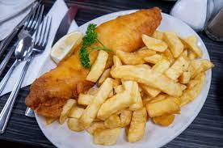

Fish & Chips

Description
Fish and Chips is a classic British dish that consists of battered and deep-fried fish served with thick-cut fries (chips). The fish is typically white fish such as cod or haddock, and it is coated in a crispy batter made from flour and beer or sparkling water. The chips are made from thick strips of potatoes and are fried until golden and crunchy. The dish is often served with traditional accompaniments such as tartar sauce, malt vinegar, or mushy peas. Fish and Chips is a beloved comfort food known for its satisfying combination of crispy, savory fish and hearty fries.
Ingredients
- 4 fillets of white fish
- 1 cup all-purpose flour
- 1 teaspoon baking powder
- 1/2 teaspoon salt
- 1 cup cold sparkling water or beer
- Vegetable oil for frying
- 4 large potatoes, peeled and cut into thick strips
- Salt to taste
Steps:
-
Prepare the Chips
-
Heat the vegetable oil in a deep fryer or large, deep pan to 350-375°F (175-190°C).
-
Rinse the potato strips under cold water to remove excess starch. Pat them dry with a paper towel.
-
Carefully lower the potato strips into the hot oil and fry until golden brown and crisp. This may take 3-5 minutes, depending on the thickness of the fries.
-
Remove the fries from the oil and place them on a plate lined with paper towels to absorb any excess oil.
-
Sprinkle the fries with salt while they are still hot.
-
Prepare the Fish
-
In a bowl, whisk together the flour, baking powder, and salt.
-
Gradually add the sparkling water or beer to the dry ingredients, whisking until you have a smooth batter.
-
Dip each fish fillet into the batter, coating it completely.
-
Heat vegetable oil in a deep fryer or large pan to 350-375°F (175-190°C).
-
Carefully lower the battered fish into the hot oil and fry until the coating is golden brown and the fish is cooked through. This typically takes 4-6 minutes depending on the thickness of the fish.
-
Remove the fish from the oil and place it on a plate lined with paper towels to drain any excess oil.
-
Serve
-
Serve the fish and chips together on a plate, perhaps with a side of tartar sauce, malt vinegar, or your preferred condiments.
-
Enjoy your classic Fish and Chips!